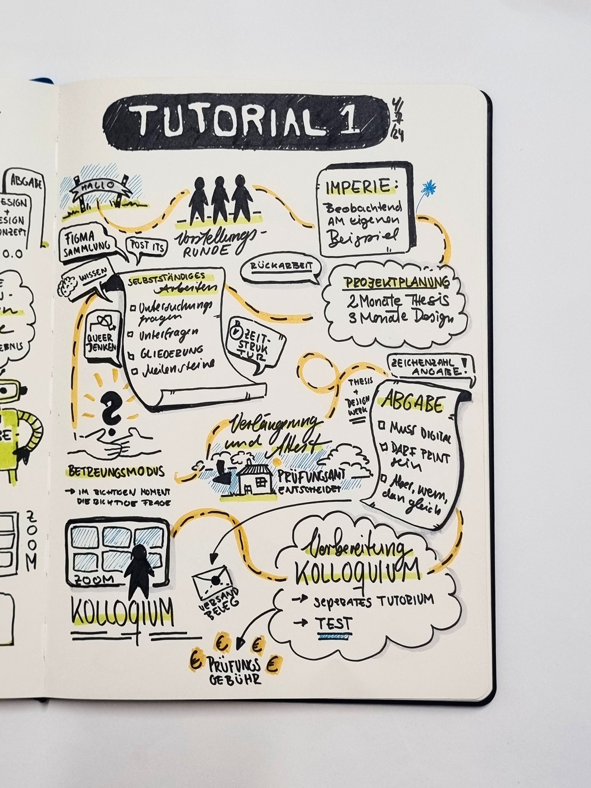
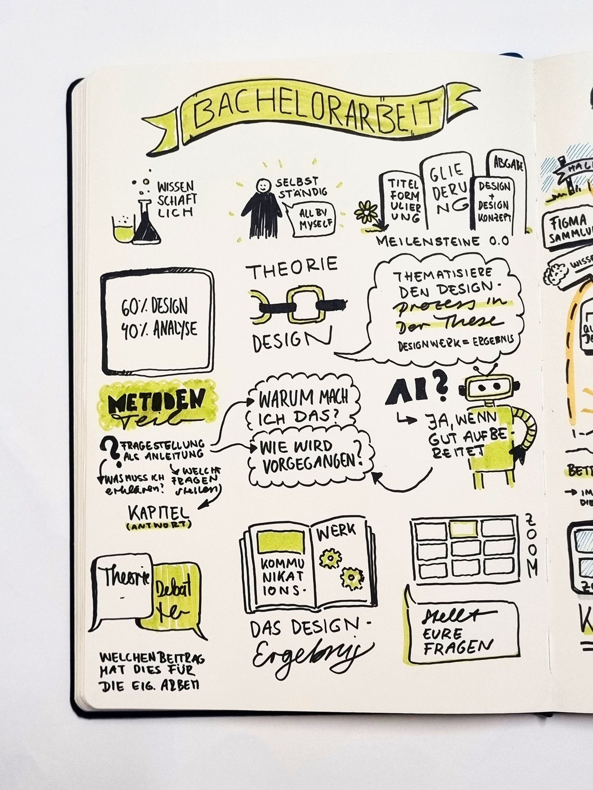
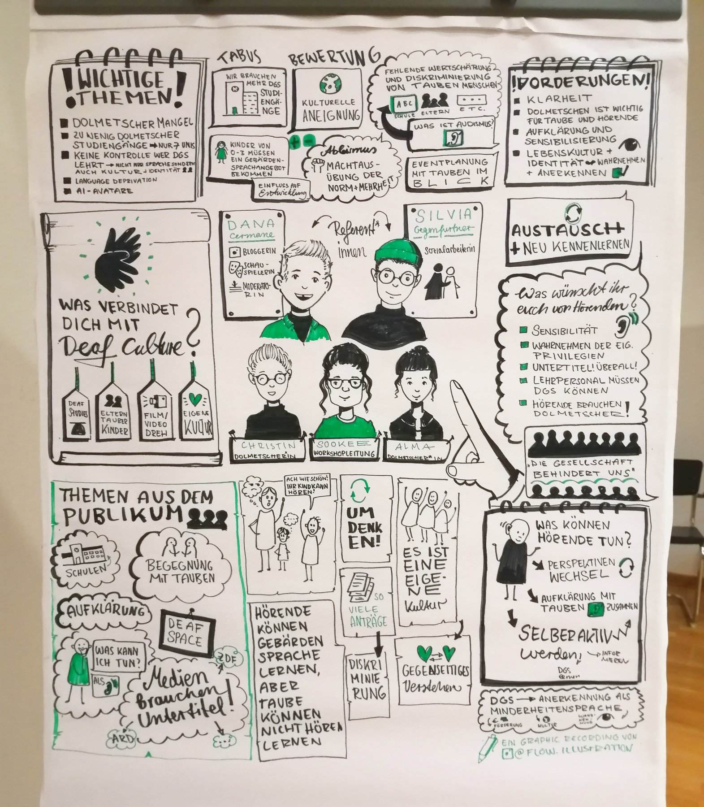
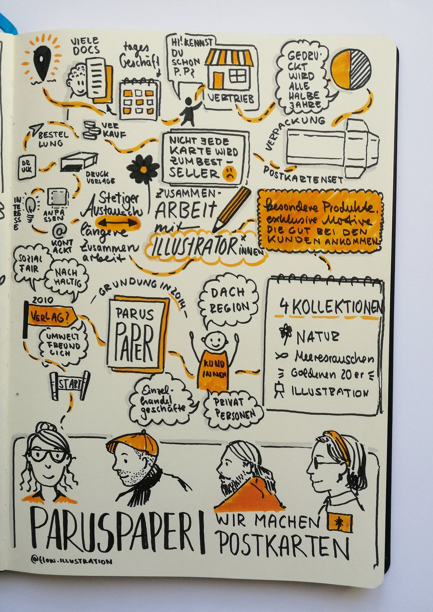
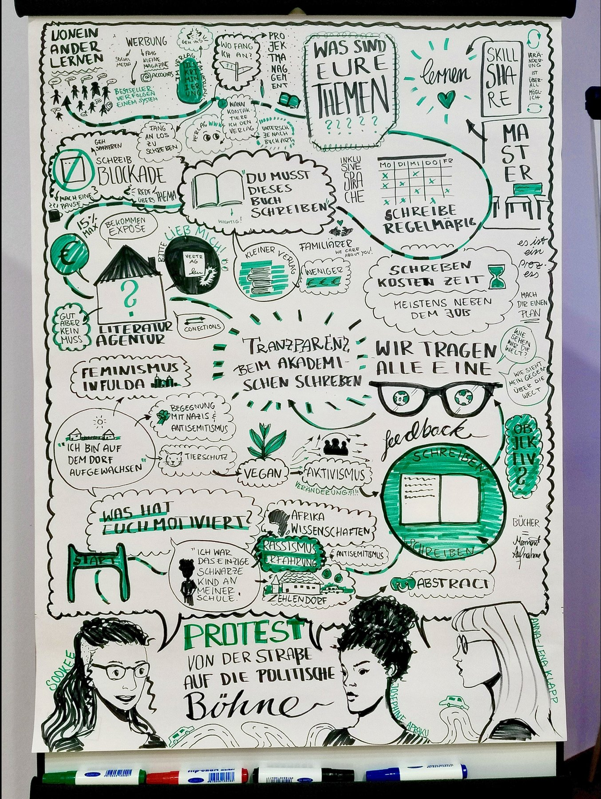
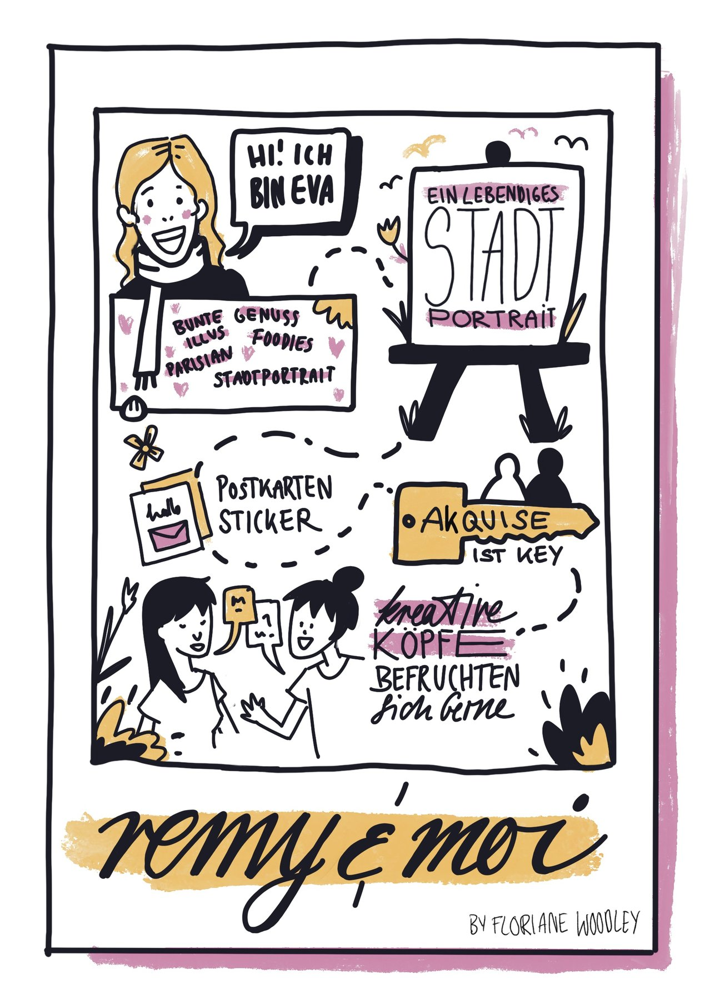
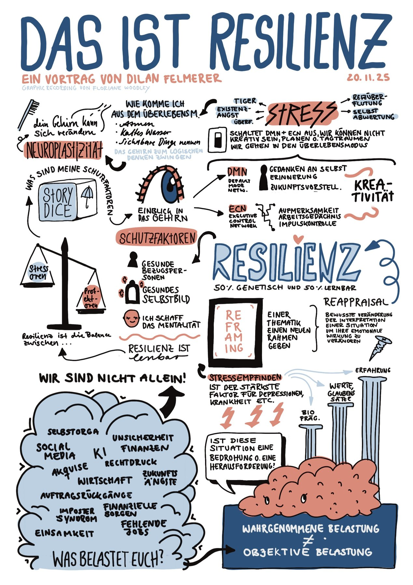
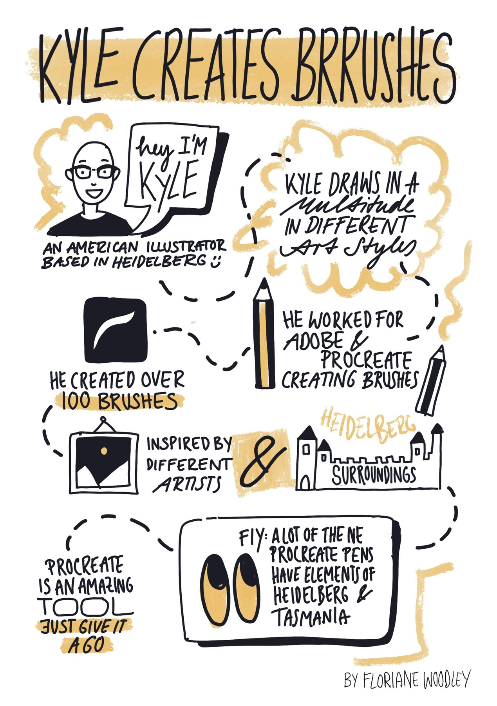
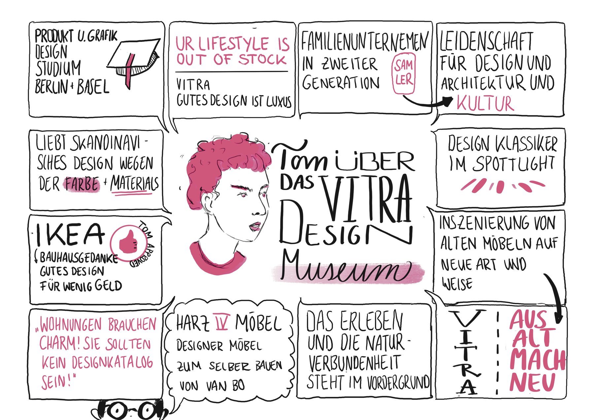
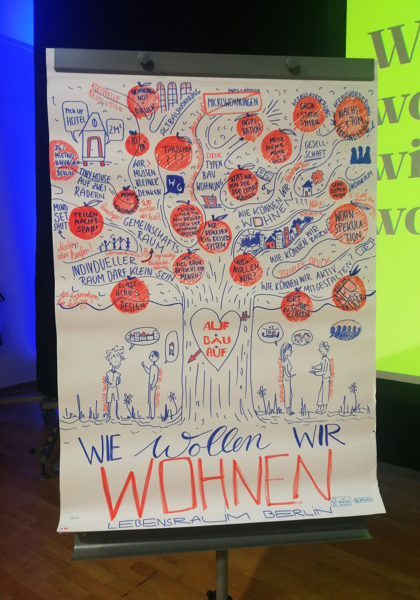

Graphic Recording
Graphic Recording is live visual note-taking on a large scale — drawn in real time on flipcharts, whiteboards, or digitally on an iPad projected onto a screen. As a talk or workshop unfolds, ideas, themes, and connections are captured as a single visual overview that the whole room can see. What makes it powerful is what happens after: people gravitate towards it, photograph it, share it. It sparks conversations between attendees who might not have spoken otherwise, and carries the ideas of the event far beyond the room. If you work in social sectors, psychology, education, or any field where complex ideas need to land clearly and stick — Graphic Recording can make that happen. Get in touch to book me for your next event.









